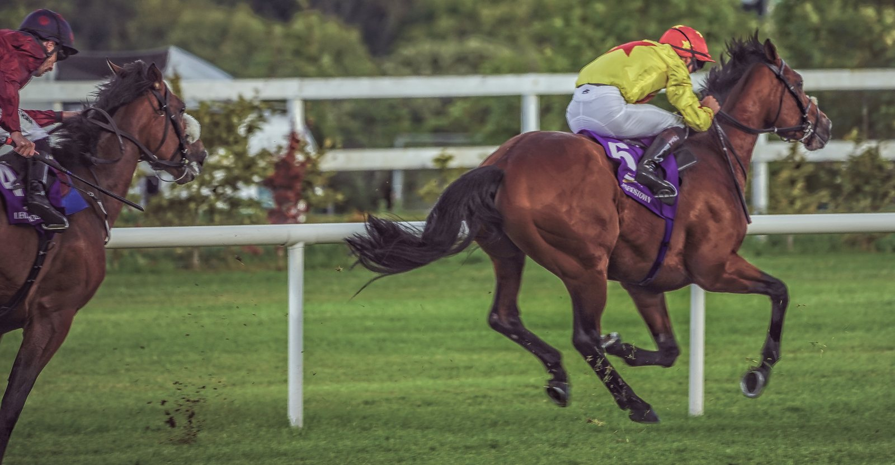

Ian Power recurre la suspensión de diez días por su monta de Rose Warrior en Uttoxeter
Un Panel Disciplinario independiente de la BHA estudia este viernes 16 de octubre el recurso del jockey contra la sanción de los comisarios por no buscar la mejor clasificación posible.

CC BY-SA 2.0
El jockey Ian John Power defiende este viernes 16 de octubre su recurso contra la sanción impuesta por los comisarios del hipódromo de Uttoxeter. La vista ante el Panel Disciplinario independiente está fijada a las 9:30 horas.
Los hechos se remontan al 4 de octubre. Tras la tercera carrera de la jornada, en la que Power montó a Rose Warrior, los comisarios lo declararon culpable de no haber adoptado todas las medidas razonables y permitidas para obtener la mejor clasificación posible. La decisión conllevó una suspensión de diez días, que ahora es objeto de apelación.
El tribunal que examinará el caso estará presidido por el juez James O'Mahony y lo completan Aidan Coleman y Hannah Bradley.
El Panel Judicial de la British Horseracing Authority (BHA), que engloba el Panel Disciplinario, el Comité de Apelación y el Comité de Licencias, es un órgano independiente que recibe apoyo administrativo de la BHA a través de su Ejecutivo del Panel Judicial. Actualmente celebra sus vistas por videoconferencia mediante Zoom. Los medios que quieran seguirlas deben aceptar por escrito el protocolo establecido.
Funcionamiento de las vistas del Panel Judicial (BHA) · Protocolo para medios (BHA)
Por Martín Larrañeta